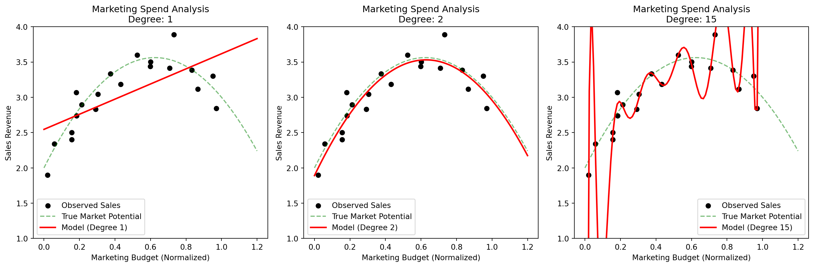
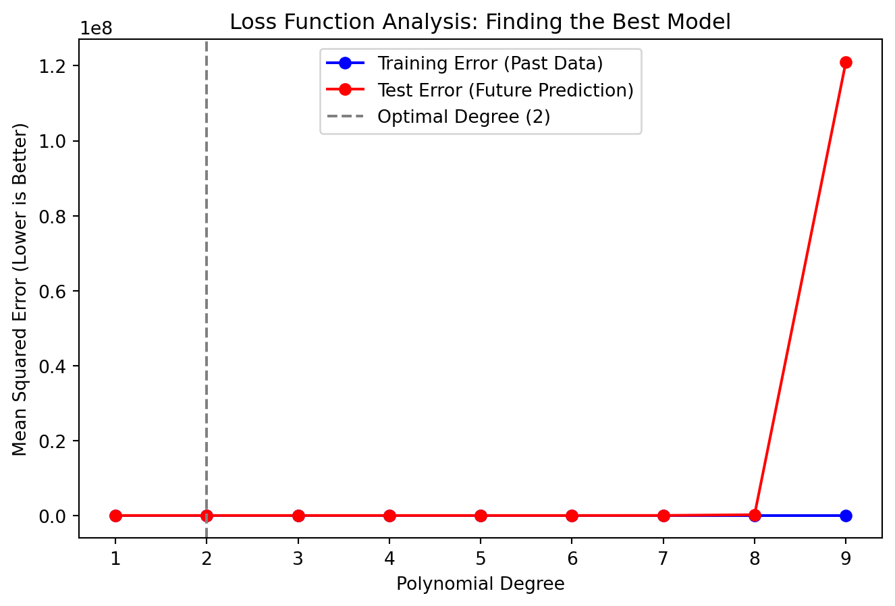
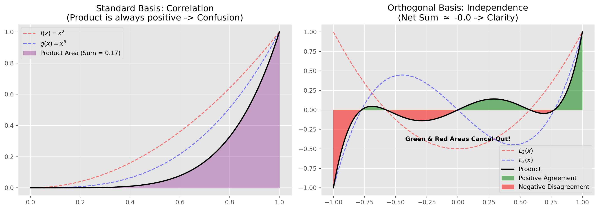
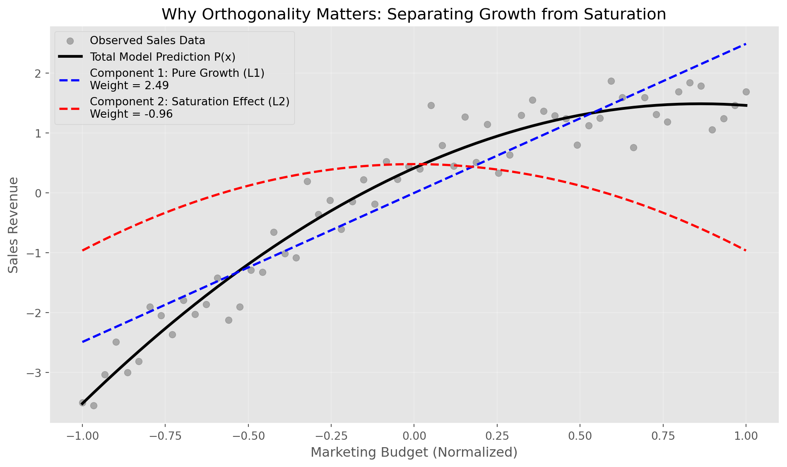
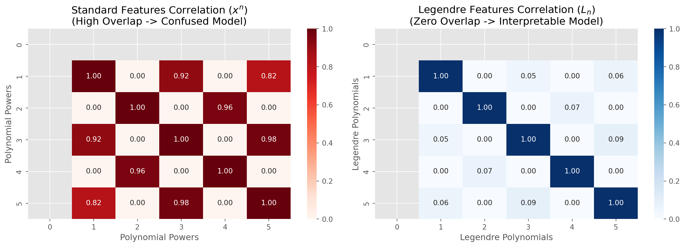
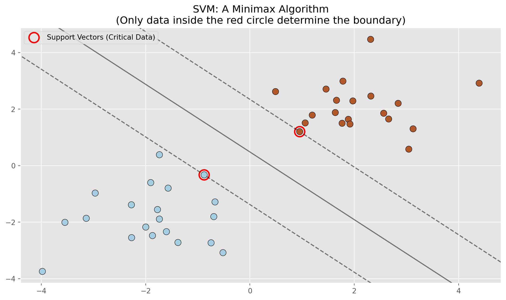

Application of Approximation Theory in Data Science
How classical mathematical concepts underpin modern machine learning?
2025-12-30
Introduction: A Numerical Analysis Perspective on Learning
Approximation theory involves two general types of problems. One problem arises when a function is given explicitly, but we wish to find a “simpler” type of function, such as a polynomial, to approximate values of the given function. The other problem in approximation theory is concerned with fitting functions to given data and finding the “best” function in a certain class to represent the data.
While modern Data Science is often discussed in terms of “learning” and “AI,” it is mathematically strictly defined by these two classical problems:
- The Data Fitting Problem: The second problem type forms the theoretical basis of Supervised Learning. When we train a model on a dataset \(\{(x_i, y_i)\}\), we are simply finding the “best” function (minimizing a norm) within a specific class (hypothesis space) to represent the noisy observations.
- The Function Simplification Problem: The first problem type, though less obvious, is the engine behind Feature Engineering. When we project raw input into higher dimensions (e.g., polynomial features) or seek orthogonal bases to avoid multicollinearity, we are essentially approximating the complex underlying process with a simpler, more mathematically tractable algebraic structure.
In this article, we explore how these classical approximation methods dictate the behavior of modern algorithms:
- Discrete Least Squares: How the “best fit” problem leads to the Normal Equations and the bias-variance tradeoff.
- Continuous Least Squares: How approximating explicit functions using orthogonal polynomials (like Legendre) solves feature correlation issues.
- Minimax Approximation: How changing the definition of “best” from an \(L_2\) norm (average error) to an \(L_\infty\) norm (maximum error) creates the foundation for Support Vector Machines (SVM).
1. Discrete Least Squares in Action: Marketing ROI Analysis
In Data Science, we rarely fit curves just for the sake of geometry. We do it to model real-world phenomena. ::: {.callout-note title=“Scenario” icon=false} A company wants to understand how increasing the Marketing Budget (\(x\)) impacts Total Sales (\(y\)). They have data from the last 12 months. :::
The Linear Algebra Perspective: \(Ax = b\)
Let’s say we have small dataset of 4 months.
Month 1: Spent $1k \(\rightarrow\) Sales $10k
Month 2: Spent $2k \(\rightarrow\) Sales $18k
Month 3: Spent $3k \(\rightarrow\) Sales $24k
Month 4: Spent $4k \(\rightarrow\) Sales $28k
We suspect the relationship is quadratic (\(y = a_0 + a_1x + a_2x^2\)) because growth is slowing down. To find the coefficients \(\mathbf{a} = [a_0, a_1, a_2]^T\), we set up the system \(V\mathbf{a} = \mathbf{y}\).
The Vandermonde Matrix (\(V\)) represents our features (Intercept, Spend, Spend\(^2\)):
\[ \underbrace{ \begin{bmatrix} 1 & 1 & 1^2 \\ 1 & 2 & 2^2 \\ 1 & 3 & 3^2 \\ 1 & 4 & 4^2 \end{bmatrix} }_{V \text{ (Features)}} \cdot \underbrace{ \begin{bmatrix} a_0 \\ a_1 \\ a_2 \end{bmatrix} }_{\mathbf{a} \text{ (Unknowns)}} = \underbrace{ \begin{bmatrix} 10 \\ 18 \\ 24 \\ 28 \end{bmatrix} }_{\mathbf{y} \text{ (Sales)}} \]
The Hilbert Matrix Connection (Why Data Scaling Matters)
In this small example, the numbers are small (\(4^2=16\)). But imagine analyzing “Server Load” where \(x\) is a timestamp (e.g., \(1698765432\)). Then \(x^2\) becomes huge (\(10^{18}\)). The matrix \(V^T V\) would contain elements of vastly different magnitudes, behaving like a Hilbert Matrix.
Data Science Lesson
This is why Feature Scaling (StandardScaler/MinMaxScaler) is mandatory before polynomial regression. Without it, the matrix inversion becomes numerically unstable, and the model crashes.
Feature Engineering: Interpreting \(x^i\)
In our Marketing example, calculating \(x^2\) or \(x^3\) is Feature Engineering. We are creating new information from existing data.
\(x\) (Linear Feature): Represents the direct impact of spending money. “If I pay more, I show ads to more people.”
\(x^2\) (Interaction/Curvature Feature): Represents Saturation.
- If the coefficient of \(x^2\) is negative (e.g., \(-0.5 x^2\)), it mathematically models “Diminishing Returns.” It bends the curve downwards at high spending levels.
Without this engineered feature (\(x^2\)), the model is blind to the concept of market saturation.
Visualizing Underfitting, Overfitting, and Generalization
Let’s simulate a dataset where the true relationship is Quadratic (Diminishing returns), but we add “Market Noise” (random fluctuations).
::: {#cell-fig-marketing-roi .cell .fragment fade-in execution_count=1}

:::
Analysis of the Graphs
Degree 1 (Underfitting):
The Model: A straight line.
The Business Error: The model predicts that if we keep doubling the budget, sales will keep doubling forever. It misses the “saturation” point entirely.
DS Term: High Bias (The model is prejudiced to believe the world is linear).
Degree 2 (The Sweet Spot):
The Model: A nice curve that goes up and then flattens.
The Business Success: It correctly identifies that after a certain spend (around 0.6), sales stop growing effectively. This saves the company money.
Degree 15 (Overfitting):
The Model: A wiggly line that hits every single data point.
The Business Error: Look at the right side of the graph (\(x > 1.0\)). The model likely predicts a massive crash or vertical spike in sales for next month, just because of random noise in the past data.
DS Term: High Variance (The model is hallucinating patterns in the noise).
The Loss Function
We measure the quality of our model using the Residual Sum of Squares (RSS).
\[Loss(\mathbf{a}) = \sum (\text{Actual Sales} - \text{Predicted Sales})^2\]
Let’s see the numbers for our Marketing example to understand Selection of \(n\).
::: {#cell-fig-loss-function .cell .fragment fade-in execution_count=2}

:::
Interpreting the Loss Chart
Training Error (Blue): As we increase degree \(n\), the error goes down. At degree 9, it’s very low because we are memorizing the past.
Test Error (Red): The error drops at \(n=2\) (the true pattern), but explodes at \(n=5\) and above.
Decision: A Data Scientist looks at this chart and picks \(n=2\). This is the point where the loss is minimized for unseen data.
Continuous Least Squares and Feature Engineering
In the previous section, we treated data as discrete points. However, in advanced Machine Learning, we often view the underlying process as a continuous function. This shift leads us to one of the most sophisticated techniques in Feature Engineering.
When we perform Polynomial Regression, we are essentially creating new features (\(x, x^2, x^3, \dots\)) from a single raw input \(x\). This is a powerful technique to capture non-linearity, but it comes with a severe hidden cost in standard Machine Learning: Multicollinearity.
The Mathematical Foundation: Orthogonality
To understand the solution, we must look at the geometry of functions. In a vector space of functions, two functions \(f(x)\) and \(g(x)\) are considered “perpendicular” (or orthogonal) if their inner product is zero. Unlike vectors where we sum components, for continuous functions, we use an integral:
\[\langle f, g \rangle = \int_{a}^{b} f(x)g(x) \, dx = 0\]
The standard features we usually generate (\(1, x, x^2, \dots\)) are NOT orthogonal. Mathematically, \(\int_{0}^{1} x \cdot x^2 \, dx \neq 0\). This means they “overlap” significantly.
To fix this, we change our basis to Orthogonal Polynomials, such as Legendre Polynomials (\(L_n(x)\)). These functions are constructed specifically to satisfy the orthogonality condition:
\[\int_{-1}^{1} L_m(x) L_n(x) \, dx = 0 \quad \text{for } m \neq n\]
Visual Intuition: Why Must the Integral Be Zero?
The mathematical definition of orthogonality (\(\int f(x)g(x) dx = 0\)) often feels abstract. Why does a “zero integral” imply that two features are independent?
Think of the Product of two functions as a “Compatibility Check”:
If both functions go up (positive) or both go down (negative), their product is Positive (Agreement).
If one goes up and the other goes down, their product is Negative (Disagreement).
The Integral is simply the sum of all these agreements and disagreements across the entire range.
Standard Basis (e.g., \(x^2\) vs \(x^3\) on \([0, 1]\)): They are almost always in agreement (both positive). The integral is a large positive number, meaning they are highly correlated. The model sees them as “redundant”.
Orthogonal Basis (e.g., Legendre \(L_2\) vs \(L_3\)): They fluctuate. Sometimes they agree, sometimes they disagree. Crucially, the “positive agreements” perfectly cancel out the “negative disagreements”. The total sum (integral) is Zero.
This “Zero Balance” tells the Machine Learning model: “These two features have absolutely no net relationship. You can trust the weight of one without worrying about the other.”
Let’s visualize this “cancellation” effect:
::: {#cell-fig-ortho-intuition .cell .fragment fade-in execution_count=3}

:::
Why This is Crucial for Machine Learning?
To understand the power of this method, let’s leave abstract math aside and solve a critical business problem.
The Scenario
Imagine you are a Data Scientist at a retail giant. Your task is to predict Sales Revenue based on the Marketing Budget (\(x\)).
We know this relationship is complex:
Growth Phase: Initially, spending more money leads to more sales (Linear effect).
Saturation Phase: Eventually, the market gets saturated. Spending double the budget won’t double the sales; the return diminishes (Curvature/Quadratic effect).
We need a polynomial model to capture this “Diminishing Returns”. Let’s compare the two approaches:
Solving the “Information Overlap” Problem
Suppose we use the standard approach and feed the model \(\text{Budget}\) (\(x\)) and \(\text{Budget}^2\) (\(x^2\)).
The Problem: In marketing data, when you increase the budget, both \(x\) and \(x^2\) increase simultaneously. They are heavily correlated.
The ML Consequence (Confusion): The model sees a change in sales, but it gets “confused”. Is the sales spike due to the raw spending power (\(x\)) or the market saturation curve (\(x^2\))?
Result: It splits the importance arbitrarily. You might get unstable coefficients that change wildly with just one new week of data.
Feature Independence and Stability
Now, imagine we use Orthogonal features (\(L_1, L_2\)).
\(L_1\) captures the “Pure Growth Trend”.
\(L_2\) captures the “Pure Saturation Effect”.
Scenario: You decide to add a cubic term (\(L_3\)) to model a sudden viral trend.
Standard Failure: In standard regression, adding \(x^3\) would mess up your previous analysis of growth vs. saturation. All weights would shift.
Orthogonal Success: Because \(L_3\) is independent, adding it acts like a plug-and-play module. It adds new insight without destroying the stability of your previous findings.
Model Interpretability (The “White Box” Effect)
This is vital for explaining the model to the Marketing Director.
Standard Confusion: “Mr. Director, the coefficient for Budget is 150, but for Budget-Squared is -0.05.” This is hard to translate into strategy.
Orthogonal Clarity: The weights tell a clear story:
High \(L_1\) Weight: “Our brand has strong fundamental growth.”
High \(L_2\) Weight: “We are hitting the market saturation point very hard. We should stop increasing the budget.”
Feature Selection: If the \(L_2\) weight is zero, you can confidently tell the team: “Don’t worry about saturation yet, keep spending!”
To visualize this power, let’s look at the simulation below. We decompose a noisy sales dataset into its constituent parts: the underlying growth trend and the market saturation effect. Notice how the orthogonal basis allows us to separate these effects cleanly.
::: {#cell-fig-marketing-saturation .cell .fragment fade-in execution_count=4}

:::
Practical Example: Visualizing Feature Correlation
Let’s verify this claim with data. We will compare the correlation matrix of the “Confused” standard model (Red) versus the “Clear” orthogonal model (Blue).
::: {#cell-fig-ortho-heatmap .cell .fragment fade-in execution_count=5}

:::
Chart Analysis: Reading the Numbers
This heatmap is the “health report” of your feature set. The numbers range from 0 (No Correlation) to 1 (Perfect Correlation).
Left Chart (Red - The Warning):
Look at the intersection of Feature 2 (\(x^2\)) and Feature 4 (\(x^4\)). The number is 0.96.
What this means: These two features are 96% identical! To the model, they look like twins. The model cannot mathematically distinguish which one is driving the prediction. This redundancy causes Overfitting and makes your model extremely sensitive to small noises in the data.
Right Chart (Blue - The Solution):
Look at the off-diagonal cells. The numbers are 0.00 or extremely close to it.
What this means: Each feature is mathematically unique. Feature \(L_2\) contains information that \(L_4\) does not have, and vice versa. This guarantees that your model is Stable, Efficient, and the weights assigned to each feature are the true reflection of their importance.
Minimax Approximation: Managing Worst-Case Scenarios
While the “Least Squares” method (Section 1) seeks to satisfy the majority of data (democracy), the “Minimax” method focuses entirely on the high-risk minority or the hardest data.
In mathematics, this method is known as the Infinity Norm (\(L_\infty\) Norm). If we denote the error by \(e\), the philosophical difference between these two methods is as follows:
Least Squares (\(L_2\)): Tries to minimize \(\sum e_i^2\). Meaning keeping the “average error of the whole system” low.
Minimax (\(L_\infty\)): Tries to minimize \(\max |e_i|\). Meaning bringing the “worst single error” as low as possible.
This shift in perspective underpins three important categories of classical machine learning algorithms:
Support Vector Machines (SVM): A Minimax Masterpiece
The SVM algorithm is the most famous example of Minimax application in Classification.
Suppose you want to separate red and blue data with a line. There are infinite lines that do this. Which one is better?
A line might pass through the middle of the data (Least Squares), but be very close to the reds.
Minimax Approach (SVM): We don’t care about data in the “heart” of the classes. We only care about data located on the edges (these are called support vectors).
The goal of SVM is: Find a line such that its distance to the nearest (most dangerous) data is maximized.
\[\text{Maximize} \left( \min_{i} \text{Distance}(x_i, \text{Line}) \right)\]
This is the concept of Margin. Maximizing the margin is equivalent to minimizing the risk of error in the worst case.
Location Problem: Public Welfare (K-Means) or Emergency Conditions (Minimax)?
One of the best ways to understand the difference between these two perspectives is the Clustering problem. Suppose we want to choose a few central points in a city. Two different strategies exist:
Strategy 1: Average Approach (K-Means Algorithm)
In this method, which is the most famous clustering algorithm, our goal is “majority comfort”.
Example: Amazon wants to build 3 warehouses in Tehran.
Goal: Warehouses should be where the total distance traveled by couriers is minimized.
Result: Warehouses are concentrated in populated areas and the city center. If a customer lives on the outskirts of the city, the shipping cost for them is high, but since they are just “one person”, they don’t have much impact on the company’s overall average. Here we have minimized the sum of squared errors (Variance).
Strategy 2: Minimax Approach (K-Centers Algorithm)
In this method, our goal is “covering the worst conditions”.
Example: The municipality wants to build 3 fire stations.
Goal: Here “average arrival time” is no longer important; rather, what matters is if the farthest house in the city catches fire, how long does it take for the fire truck to get there?
Result: Stations are distributed so that even the most remote points are within a standard radius. This might make the arrival time to the city center slightly longer, but it guarantees that no one waits more than 10 minutes.
Mathematics: Here we have minimized the distance of the farthest point to the center (Maximum Distance).
Key Note
K-Means does not care about outliers (it dissolves them in the average), but Minimax algorithms decide exactly based on those outliers and remote data.
Anomaly Detection
One of the vital applications of Minimax is in industry and cybersecurity. Suppose you have normal data (healthy bank transactions).
How do we draw a boundary around these to find fraudsters?
We use a method called Minimum Enclosing Ball.
Goal: Find the smallest circle that encloses all healthy data.
The radius of this circle is determined by the farthest healthy data (Minimax).
Any transaction that falls outside this “boundary of the worst healthy data” is flagged as an Anomaly.
Comparison Chart: When Minimax is a Lifesaver
For visual understanding, let’s see how badly the ordinary method performs and how excellent the Minimax method (Chebyshev nodes) is if the data has a specific pattern that fluctuates at the edges (Runge phenomenon).
::: {#cell-fig-minimax-svm .cell .fragment fade-in execution_count=6}

:::
Chart Analysis
In the chart above, red circles are drawn around points called Support Vectors. The entire mathematical model is built based only on these few points. Points deep inside the classes have no effect on the boundary line. This is the essence of the Minimax method: Ignoring safe data and absolute focus on critical points.
Thank You
Thank You!
- Questions?
- Back to Article

Application of Approximation Theory in Data Science